|
|
HOME
MY TRIBUTE GALLERY QUOTES SPEECHES 
LINKS |
Memorial -
On June 5th, 2004, Ronald Reagan passed from this earth. He died as a result of complications due to Alzheimers disease, while Nancy was at his side. Despite having not opened his eyes for many days, one of his final acts was to open his eyes and look clearly, intelligently, and with love into Nancy's eyes, and then pass away. Nancy indicated that this was one of the greatest last gifts he or the Lord could have given her.
The following pictures and remarks, marked the week-long mourning period for this great man. Hundreds of thousands made their way to California and Washington DC to pay their respects. The mourning period culminated in his state funeral in Washgton DC on Friday, June 101th, and his sunset burial in California that same evening.
LYING IN REPOSE IN CALIFORNIA. JUNE 7-9, 2004:
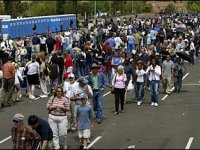 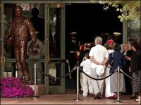
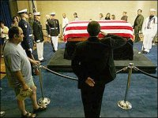 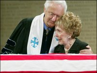 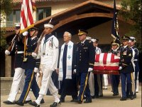
LYING IN STATE IN WASHINTON DC, JUNE 9-10, 2004:
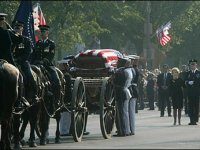 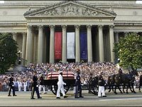
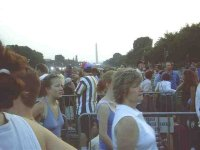 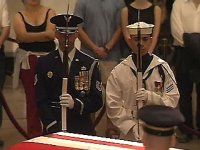
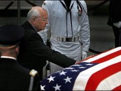 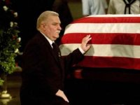 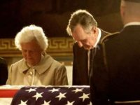
Vice President Cheney's Remarks - Representative Hastert's Remarks
FUNERAL IN WASHINGTON DC, JUNE 11, 2004:
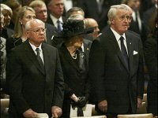
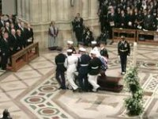
Former PM Thatcher - Former PM Mulroney - Former Pres. Bush Pres. Bush Eulogy - Former Sen. Danforth Homily
BURIAL IN CALIFORNIA, SUNSET ON JUNE 11, 2004:
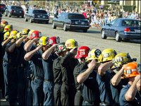 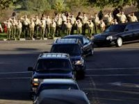 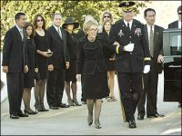
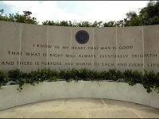
Michael Reagan - Patti Davis (Reagan) - Ron Reagan
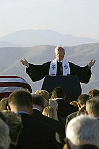 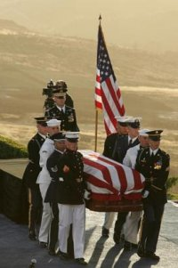 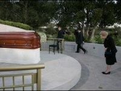 One last prayer & paying of respect, one last moment for the family & then the flag is passed to Nancy.


|


|
PRES BUSH EULOGY SR. BUSH EULOGY |
Web Site Copyright © 2004. All Rights Reserved. Web Site by Just-Fix-It Web Services |
MULRONEY EUOLGY THATCHER EULOGY |
 View Guestbook
View Guestbook
free hit counter